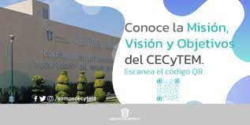

CECYTEM
Misión, visión y objetivos
Misión
Impartir educación media superior de calidad, en su modalidad de bachillerato tecnológico bivalente, con el objeto de que los egresados cuenten con educación tecnológica terminal que les permita incorporarse a una actividad productiva, o bien, continuar sus estudios de nivel superior.
Visión
Ser la mejor opción en educación media superior en su modalidad de bachillerato tecnológico bivalente en el Sistema Nacional de los CECyTE’s, así como en el Estado de México.
Objetivos
Impartir educación media superior terminal, terminal por convenio y bivalente de carácter tecnológico.
Promover un mejor aprovechamiento social de los recursos naturales y contribuir a su utilización racional.
Reforzar el proceso de enseñanza-aprendizaje con actividades curriculares y extracurriculares debidamente planeadas y ejecutadas.
Promover y difundir la actitud crítica derivada de la verdad científica, la previsión y búsqueda del futuro con base en el objeto de nuestra realidad y valores nacionales.
Promover la cultura estatal, nacional y universal, especialmente la de carácter tecnológico.
Realizar programas de vinculación con los sectores público, privado y social que contribuyan a la consolidación del desarrollo tecnológico y social de ser humano.
Elevar la calidad educativa de forma permanente.
Ampliar la cobertura social y territorial en favor de la juventud del Estado de México.
Innovar y diversificar la oferta educativa.
